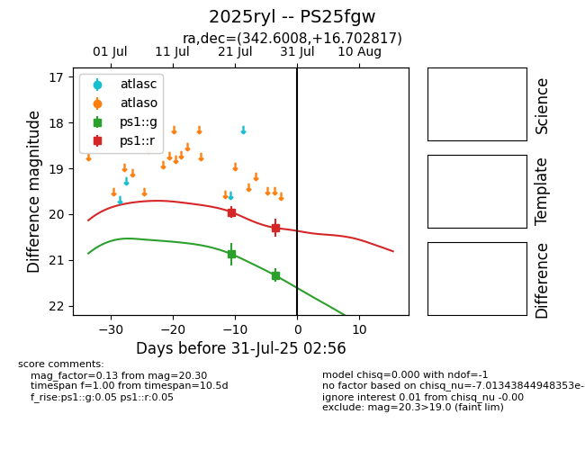

Target 2025ryl at 2025-07-31 02:56, see:
TNS: wis-tns.org/object/2025ryl
YSE: ziggy.ucolick.org/yse/transient_detail/2025ryl
alt names
2025ryl (yse,tns)
PS25fgw (panstarrs)
coordinates:
equatorial (ra, dec) = (342.6008,+16.70282)
galactic (l, b) = (85.6088,-37.24667)
photometry
last ps1::g=21.33, ps1::r=20.30
2 ps1::g, 2 ps1::r detections
